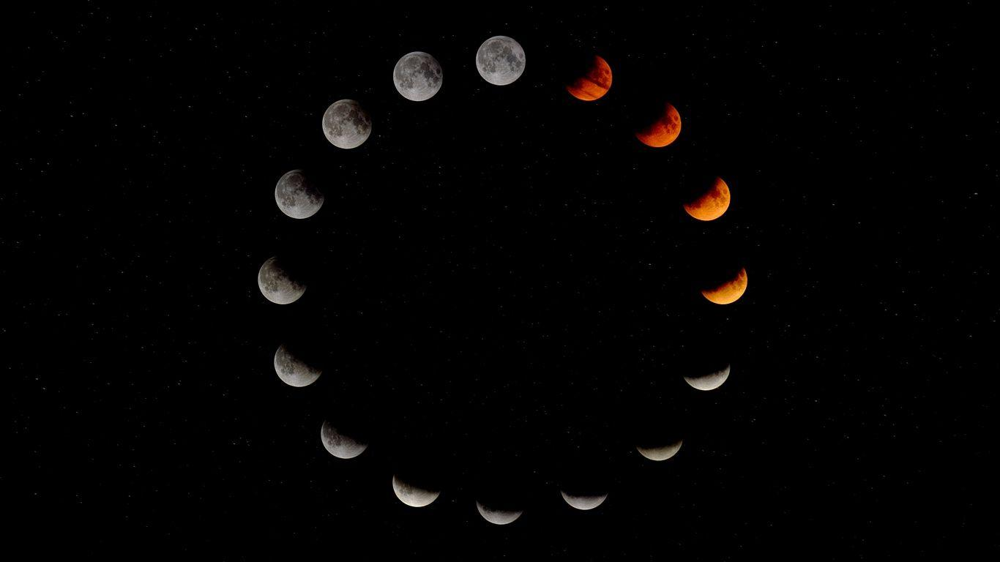

MOONQUAKES
MOON

MOON
MOON

CHAPTER 6: MOONQUAKES
Moonquakes?
Well, simply put, Moonquakes are seismic activities that occur on the Moon's surface. They're similar to the earthquakes we experience here on Earth, but they have their unique characteristics."
[Question: Different Types of Moonquakes]:
"Next, let's talk about the different types of Moonquakes. There are three main types: deep Moonquakes, shallow Moonquakes, and meteoroid impacts. Deep Moonquakes are the most common and occur about 700 kilometers below the surface. Shallow Moonquakes, as the name suggests, happen closer to the surface, and meteoroid impacts are caused when space rocks collide with the Moon."
[Question : What Causes Moonquakes?]:
"Now, what causes these Moonquakes? Unlike Earth, which has tectonic plates, Moonquakes are primarily caused by the cooling and contraction of the Moon's interior. As it cools down, it shrinks slightly, leading to the cracking and fracturing of its surface. Additionally, gravitational interactions with Earth and the Sun can also induce stress on the Moon's crust, triggering Moonquakes."
[Question: Measuring Moonquakes]:
"Measuring Moonquakes is a crucial part of understanding them. Astronauts from the Apollo missions placed seismometers on the Moon's surface. These instruments recorded thousands of Moonquakes, providing valuable data about their intensity, duration, and frequency. We've also used data from lunar orbiters and landers to study Moonquakes in more detail."
[Question: Why Are Moonquakes Important?]:
"So, why are Moonquakes important? Well, they offer us a unique window into the Moon's interior and its geological history. By studying Moonquakes, scientists can learn more about the Moon's composition, structure, and evolution. This knowledge is essential for planning future lunar missions and even potential human colonization of the Moon. Understanding Moonquakes can help us design safer lunar habitats and infrastructure."
[Question Conclusion]:
"In conclusion, Moonquakes are a captivating lunar phenomenon caused by the Moon's cooling and contraction, as well as gravitational forces. They are an essential aspect of lunar science, providing valuable insights into the Moon's geology and evolution. As we continue to explore and learn more about our celestial neighbor, Moonquakes will undoubtedly play a significant role in our journey to unlock the mysteries of the Moon. Thank you for joining me today, and until next time, keep looking up at the stars!"
Question:
"Thank you for watching this episode of our space exploration series. If you found this information intriguing, don't forget to like, share, and subscribe for more exciting space-related content. Stay curious, and keep exploring the cosmos! Goodbye!"